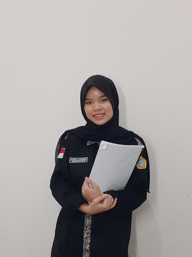
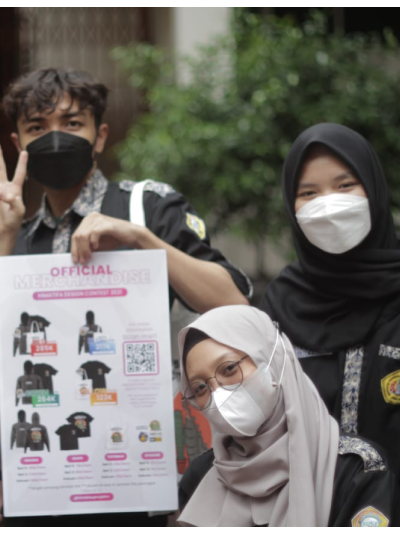
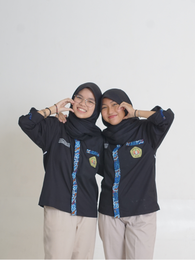

Portofolio
Pengalaman Organisasi

Sekretaris Umum II Himpunan Mahasiswa Teknik Informatika
April 2021 - Maret 2022
Mengatur jadwal, moderator rapat, mengurus kebutuhan kesekretariatan, membantu mencari solusi seluruh masalah yang dihadapi selama jalannya kepengurusan, mengikuti seluruh agenda dan program kerja

Sekretaris Himatifa Design Contest Description
Agustus - November 2021
Mengurus kebutuhan kesekretariatan, membantu merancang dan melaksanakan rangkaian pelatihan beserta lomba, pemasaran dan penjualan merch hasil karya pemenang lomba

Sekretaris Umum I Himpunan Mahasiswa Teknik Informatika
April 2022 - Februari 2023
Steering Comitte seluruh sekretaris dalam kepengurusan, mengurus kebutuhan kesekretariatan, membantu merancang dan mencari solusi dari masalah yang terjadi dalam kepengurusan, mengikuti seluruh agenda dan program kerja